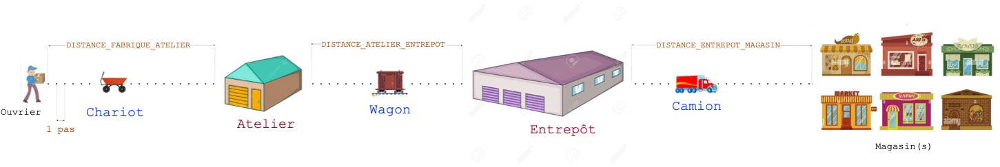
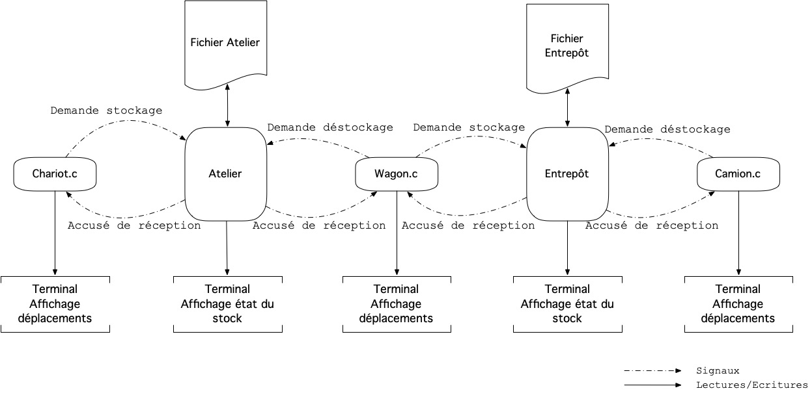
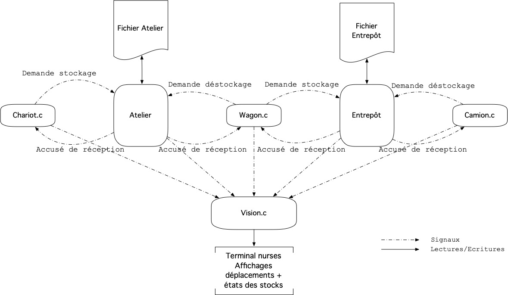
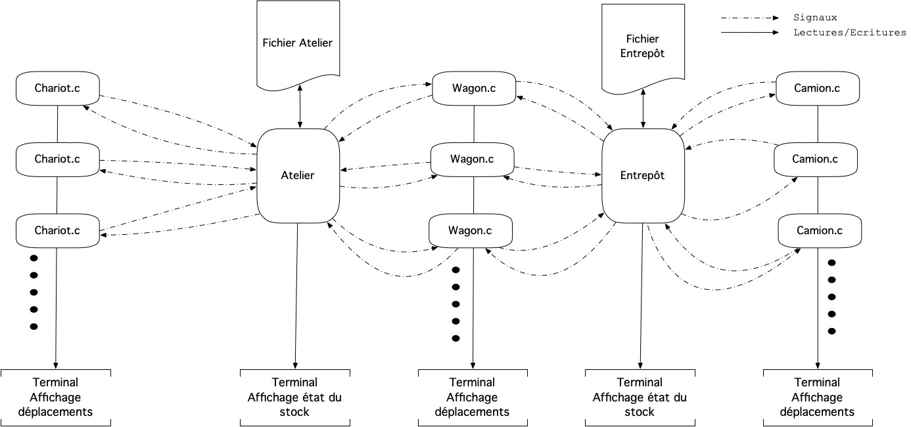
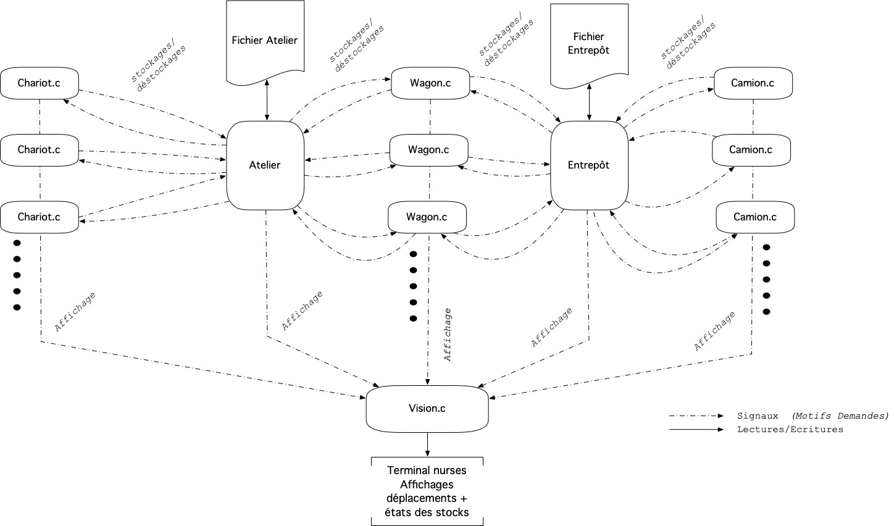

|
TP_Transport 1.0
|
L'objectif de ce TP est de synchroniser des différents moyens de transports entre les lieux de stockage d'une fabrique avec des interruptions logicielles (signaux Unix)
CHARIOT_CAPACITE produits) alors il se déplace automatiquement vers l'atelier. La distance pour aller à l'atelier est DISTANCE_FABRIQUE_ATELIER et sa vitesse est réglée par une pause CHARIOT_DELAI entre 2 pas. Le chariot revient à son point de départ lorsque l'atelier lui a donné la confirmation (ACK) que son dépôt à été réalisé. ATELIER_CAPACITE. Quand il n'y a pas assez de produits pour charger un wagon alors il met celui ci en attente (il ne lui envoi pas de ACK). De même quand il n'y a pas assez de place pour stocker le chargement d'un chariot alors il met en attente celui-ci (il ne lui envoi pas de ACK). WAGON_CAPACITE produits) alors il se déplace automatiquement vers l'entrepôt. La distance pour aller à l'atelier à l'entrepôt est DISTANCE_ATELIER_ENTREPOT et sa vitesse est réglée par une pause WAGON_DELAI entre 2 pas. Le wagon revient à son point de départ lorsque l'entrepôt lui a donné la confirmation (ACK) que son dépôt à bien été réalisé. ENTREPOT_CAPACITE. Quand il n'y a pas assez de produits pour charger un camion alors il met celui ci en attente (il ne lui envoi pas de ACK). De même quand il n'y a pas assez de place pour stocker le chargement d'un wagon alors il met en attente celui-ci (il ne lui envoi pas de ACK). CAMION_CAPACITE produits) alors le chauffeur le conduit vers le magasin. La distance pour aller de l'entrepôt au magasin est DISTANCE_ENTREPOT_MAGASIN et sa vitesse est réglée par une pause CAMION_DELAI entre 2 pas. Le camion revient plus ou moins sans attendre à son point de départ lorsqu'il a déchargé sa livraison 
Ce TP à pour but de manipuler le mécanisme des signaux vu en cours
Afin de vous aider à réaliser les programmes des moyens de transports vous pouvez vous inspirer des programmes du répertoire Exemples
Les fichiers sont répartis dans les répertoires suivants
Signaux_V1 : répertoire dédié à vos programmes pour la version 1 du sujet Signaux_V2 : répertoire dédié à vos programmes pour la version 2 du sujet Signaux_V3 : répertoire dédié à vos programmes pour la version 3 du sujet Signaux_V4 : répertoire dédié à vos programmes pour la version 4 du sujet Commun : fonctions, constantes communes à tous les TDA (Type de Donnée Abstrait) Stockage : TDA des lieux de stockage, fonctions gérant les écriture/lectures dans ces fichiers Trajets : TDA des trajets effectués par les moyens de transports Ecran : TDA de l'écran géré par ncurses, visulisation tout le système de transport de la fabrique, utilie dans la version 2 Exemples : Exemples de programmes (voir ci-dessus) On y trouve aussi divers fichiers pour la gestion du TP:
TRANSPORTS.TAGS : fichier d'indexation des fonctions, constantes... (utile sous emacs) Makefile* : fichiers de compilation à utiliser avec make Fichiers : répertoire dédié aux fichiers utilisés dans ce TP (comme les lieux de stockage par exemple) TP_Transports et faites une compilation générale en faisant make -f Makefile all. Puis allez dans le(s) répertoire(s) dédié(s) pour faire votre TP cd Signaux_V1 pour la première version de ce TP atelier.c, entrepot.c, chariot.c, wagon.c et camion.c make all cd Signaux_V2 pour la deuxième version de ce TP atelier.c, entrepot.c, chariot.c, wagon.c et camion.c de la première version en signalant, en plus, l'affichage de leurs déplacements / états des stocks avec un cinquième programme vision.c make all cd Signaux_V3 pour la troisième version de ce TP atelier.c, entrepot.c, chariot.c, wagon.c et camion.c de la première version en gérant, en plus, plusieurs moyens de transport du même type make all cd Signaux_V4 pour la quatrième version de ce TP atelier.c, entrepot.c, chariot.c, wagon.c et camion.c en de la deuxième version en gérant, en plus, l'affichage des déplacements de plusieurs moyens de transports de même type dans vision.c make all Un seul processus des programmes suivants sera lancé
chariot.c pourra fonctionner selon 2 modes
dans ces 2 cas :
Exemple de visualisation de ses trajets par stdout dans ex_trajets.c
wagon.c :
Exemple de visualisation de ses trajets par stdout dans ex_trajets.c
camion.c pourra fonctionner selon 2 modes
Exemple de visualisation de ses trajets par stdout dans ex_trajets.c
atelier.c : gère les demandes de stockage/déstockage du fichier atelier. Ce processus est dans cette version le seul à effectuer des lectures/écritures dans le fichier atelier.
Exemple de visualisation du nombre de produits par stdout dans ex_stockage.c
entrepot.c : gère les demandes de stockage/déstockage du fichier entrepôt. Ce processus est dans cette version le seul à effectuer des lectures/écritures dans le fichier entrepôt.
Exemple de visualisation du nombre de produits par stdout dans ex_stockage.c

Le sujet est le même que dans la version précédente avec, en plus,
une visualisation en temps réel des trajets des moyens de transports et l'état des lieux de stockage sur un seul écran. Cet écran est géré par le processus vision.c. Tous les autres processus devront donc signaler à vision.c chaque changement dans l'affichage de ce système
vision.c doit recevoir les demandes d'affichage

Les changements vont se situer dans la gestion des moyens de transports qui sont en attente. Là où auparavent il était possible de la réaliser avec une simple variable, il faut maintenant utiliser une file d'attente.
Plusieurs exécutions des programmes suivants pourront être lancées
C'est donc dans le code de ces 2 programmes qu'il faut faire intervenir la notion de file d'attente. Vous pouvez utliser pour cela le TDA pidlst_t déjà défini. Exemple d'utilisation des fonctions de gestion du type pidlst_tdans ex_liste_pids.c
atelier.c : idem que dans la version V1 mais, en plus, gère les files d'attente
entrepot.c : idem que dans la version V1 mais, en plus, gère les files d'attente

Les changements vont se situer dans la gestion de l'affichage des moyens de transports où il faudra gérer les signaux d'affichage de plusieurs moyens de transports du même type.
Exemple de visualisation de plusieurs trajets de plusieurs moyens de transport par ncurses dans ex_trajets_N_ecran.c
Plusieurs exécutions des programmes suivants pourront être lancées
Ces programmaes pourront soit
C'est donc dans le code de ces 2 programmes qu'il faut faire intervenir la notion de file d'attente. Vous pouvez utliser pour cela le TDA pidlst_t déjà défini. Exemple d'utilisation des fonctions de gestion du type pidlst_t dans ex_liste_pids.c
atelier.c : idem que dans la version V3
entrepot.c : idem que dans la version V3
Pour que vision.c puisse identifier les demandes des différents transports de même type, on peut utiliser
sa_sigaction d'une struct sigaction avec le flags SA_SIGINFO (faire un man sigaction pour plus d'information) 
Quand vous recevez un signal, si vous avez besoin de connaître le pid du processus qui vous l'a envoyé alors vous pouvez procéder comme suit
struct sigaction void (*sa_handler)(int); , celui que nous avons utilisé en TD et qui reçoit donc un handler avec un seul paramètre correspondant au numéro du signal qui l'a activé void (*sa_sigaction)(int, siginfo_t *, void *); qui, lui, reçoit un handler avec en deuxième paramètre une structure contenant des informations sur l'émetteur du signal. En particulier le champ si_pid qui devrait indiquer le pid de l'émetteur SA_SIGINFO indiquant qu'il faut remplir cette structure à la réception d'un signal Vous pouvez donc par exemple déclarer le handler suivant
void mon_handler( int sig , siginfo_t * siginfo , void * contexte )
{
... siginfo->si_pid ... --> Contient le PID du processus émetteur
--> si == 0 alors le processus s'est envoyé lui-même le signal (A VERIFIER sur votre machine)
}
Et capturer le signal dans le main par
...
struct sigaction action ;
action.sa_flags = SA_SIGINFO ;
action.sa_sigaction = mon_handler ;
...
sigaction( NOM_DU_SIGNAL , &action , NULL );
...
A remettre sur la zone de dépôt de UMTICE dédiée à ce TP. Il faudra y déposer:
TP_Transport.tar.gz contenant les différentes versions de votre système de transport